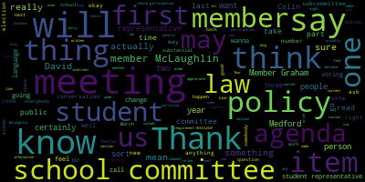
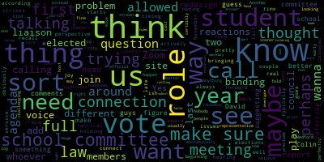
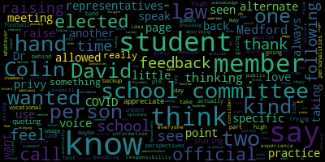
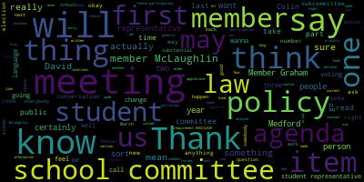
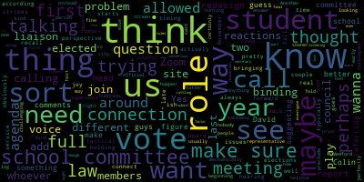
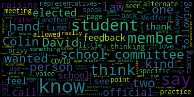

total time: 20.33 minutes
total words: 3154

{kind=link}
total time: 12.22 minutes
total words: 2341

total time: 5.08 minutes
total words: 807

{kind=link}
total time: 5.78 minutes
total words: 746

[Ruseau]: All right, I think we have everybody here we need for sure to be here. Good evening, everyone. I'm going to call to order the Rules, Policy and Equity Subcommittee meeting of the Medford School Committee. Let me read the very long posting, which I'm sure somebody wrote this thing back last March. Nobody realized we'd have to read it 1,000 times. Please be advised that on Wednesday, March 24th, 2021, from four to 5 p.m., there will be a rules, policy, and equity subcommittee meeting held through remote participation via Zoom. Pursuant to Governor Baker's March 12th, 2020 order suspending certain provisions of the open meeting law and the Governor's March 15th, 2020 order imposing strict limitations on the number of people that may gather in one place, this meeting of the Medford School Committee will be conducted via remote participation to the greatest extent possible. specific information, and the general guidelines for remote participation by members of the public and or parties with a right and or requirement to attend this meeting can be found on the City of Medford website. For this meeting, members of the public who wish to listen or watch the meeting may do so by accessing the meeting link contained herein. No in-person attendance of members of the public will be permitted, but every effort will be made to ensure that the public can adequately access the proceedings in real time via technological means. In the event that we are unable to do so despite best efforts, we will post on the city of Medford or Medford community media websites and audio or video recording transcript or other comprehensive record of proceedings as soon as possible after the meeting. The meeting can be viewed through Medford community media on Comcast channel 22 and Verizon channel 43 at four o'clock. Since the meeting will be held remotely, participants can log on or call in by using the following link or call in number. The, excuse me, the URL for this meeting is https://mps02155-org.zoom.us slash j slash 938-675-93539. To call in, you would call 1-919-205-6099 and the meeting ID is 938-675-93539. Additionally, questions or comments can be submitted during the meeting by emailing me at pruseau at medford.k12.ma.us. Those submitting must include the following information, your first and last name, your Medford Street address, your question or comment. The agenda for, well, we'll get to the agenda in a moment. First, I'd like to take a roll call. Member Graham?
[McLaughlin]: Here.
[Ruseau]: Member McLaughlin?
[McLaughlin]: Here.
[Ruseau]: And a member or so here, three present. We have a quorum. So we have two items on our agenda tonight. The first item we'll just get right into. So in light of recent events in Boston regarding the participation of the student representative to the school committee, conversation with the current representatives, Colin Bailey and David, David, how do you say your last name? May or my?
[David May]: It's May, like a month.
[Ruseau]: May, thank you. Will take place to understand how they are experiencing participation as our student representatives, as well as what changes may be necessary to better integrate their voices and perspective and respect their participation as critical members of the school committee. So I first wanna welcome Colin and David, and thank you for joining us. Member Graham, I think has to say something. member of Mr. McLaughlin, sorry.
[McLaughlin]: Member Graham was like, I do? Thank you, Member Ruseau. I just wanted to say welcome to Colin and David, and it's nice to see you. I know we've been exchanging email and having a little bit of email tag, so I'm really glad. And thank you to Member Ruseau for convening the meeting so that we can hear from you guys publicly in this meeting. So it's good to see you. Thanks for coming.
[Ruseau]: So I hadn't really thought too much about how we would do this. The nice thing about subcommittees and small committees versus the giant meetings where there's 180 people watching is we can actually have a regular conversation. And frankly, I would wish this was just sitting around a table together because it would be way better. So I think that if it's OK with you too, I would certainly welcome either one of you commenting or providing any feedback you have before the members before we start pontificating, which I'm certainly prepared to do.
[McLaughlin]: Sorry, point of information member Ruseau.
[Ruseau]: Sure.
[McLaughlin]: Would you mind also just sharing what the, I know that you said regarding the, what had happened in the Boston school committee. So maybe for folks who are watching or who don't know what you're referencing, maybe you could share that.
[Ruseau]: Sure. So I did not read all the articles and there were more than, there was a few. So the representative, and I don't believe this was the only representative, I believe this has happened more than once, to the school committee resigned in protest to being dismissed and having their voices not valued and their opinions valued. And I did not watch any of the recordings to see what that looked like. I certainly had no trouble just accepting that the experience of the students was the experience of the student representatives. That sort of is a baseline for me. So I don't know if either Colin or David want to provide more details, but, and I don't know, can you?
[SPEAKER_06]: Yeah, sorry. Thank you, Marusa. Yeah, I actually have the article pulled up right now and I'm looking at it. And one thing that he's talking about is, the member of the school committee who resigned, he said that he felt that he was immediately shut down when he had a question and they answered questions from other people that weren't asked yet. Personally, I don't feel that the comments that I make are overshadowed, but I do feel that they aren't as representative as representative as other comments are. I don't know if there could be an, if David agree with me or disagree, I would like to hear his input too, but personally, I feel like the voice that we have is not the same voice that the member that resigned had, where he could actually make comments on the regular.
[David May]: Um, to also that point, um, I kind of just want to preference that I rather this just be an open conversation between all of us and the school board, um, it just makes a lot easier and for us to have a conversation to talk about these things and like I said Colin was bright with that, um, I think, right now, with me and calling on this board. We really don't have much of a say, nor do we have a vote at all and I think these are, this is one of the biggest issues that we need to come forward and tackle because right now we just feel like we're just a person on the board to represent the students, and we don't really have a say but we're just here to be here. I kind of just drawn up like a couple of things that I think would help us to move on forward with this. So one of the things is basically creating new student representation within the board. I feel as though that we should basically move forward in a plan to basically expand how many students are on this board and to be representative of the school. So one of the things I came up with is having a class liaison or two class liaisons per each class. So we would have freshmen's liaisons, sophomores, juniors, and seniors that would basically talk amongst each other to basically come up with new plans about school committee items or any new proposals that they'd like to see in the future to be added to the school or to the board at all. And, um, this is like one of the ways that just continue to help. I think there's also be little to no adult supervision because I feel as though that whenever there is adult in the room or an adult on the board. it kind of creates a new feeling or different type of mood that the students aren't able to be open or freely to discuss about these topics. So I feel like this should be a student led organization that kind of just encompasses the entire high school from each different grade level to talk about what's going on within their own grade or class that then is brought up to the entire board itself to propose new plans or new ideas in the future.
[SPEAKER_06]: I'd actually like to piggyback off of what David was saying. I previously worked alongside the headmaster DeLeva and a couple other members of the site council as vice president of the class for freshmen through junior year. And there were meetings and One thing that I really liked about it was that we had student representation through and through. We had two representatives, the president and the vice president of each class show up to the meetings. And I thought that was a really good opportunity for students to express their ideas because it gave a it gave the president, the vice president, they were the ones who knew the class the most. And I thought that was a really good opportunity for students to actually get their voice out there because I felt that we were heard and our ideas were put into action immediately.
[Ruseau]: So ideally, yeah, go. Can I just ask for a clarification on that? So this president, vice president from each of the classes, this was a thing that's, I mean, this whole year is sort of, when I say usually, always have to sort of caveat that this year doesn't really count, but so this was a, this is a thing that's already existed that where these people are meeting, these students are meeting.
[SPEAKER_06]: I believe that it was, it was for the, for the time that I was vice president of the class, but I cannot speak for this year because I am not an elected official or an officer. So, but for the time that I did do it, I thought that was a great opportunity for students to get their voice out there and And was there a name for this group? Sorry, if I missed that. No, no, no, no. It was just called site council, I believe. Oh, site council. Thank you. Sorry. Yeah. Sorry about that. I completely glanced over that. Yeah.
[Ruseau]: Melanie? Member McLaughlin, excuse me.
[McLaughlin]: Yeah. No, it's good to hear this, and I'm glad that you really felt incorporated into the site council. Colin, one of the things I am wondering about David and Colin both, as we're thinking about the vice president and president, I'm assuming you mean the class officers.
[SPEAKER_06]: Yeah, yeah.
[McLaughlin]: So yeah, that are elected by the class, which again, I mean, I think that's a good starting point. But I also want to make sure that we're thinking about our students that are outside of those regular sort of spaces. So students that might not necessarily be elected to the class officers, right? Or, you know, haven't run for office or don't want to or whatever. It's like, how are we thinking about and I know that The class offices represent all students, but I think it would be nice to see a mix too. So yes, so that's my point member or so. Thank you. Thank you.
[SPEAKER_06]: No, I agree with Mr. McLaughlin 100%. I feel like obviously student representatives are elected by the class and I think for the vice president and president position. And I think that there should be more representation when it comes to that if we were to incorporate this into the committee.
[David May]: Yeah, so I'm like my initial proposal, I only propose one or two people but I do see in the future where we, sorry, where we would have to expand. And I think that would become a idea that part of the board does so student led board will talk about and to expand it to how many students. I also think that diversity is another huge thing. within that board to basically having a diverse students from different backgrounds or different types of ways of life, a loss of life to be able to talk about these ideas and create new change is going to be a very, very crucial thing, because I know currently I feel as though that metaphor is kind of divided in a way. There's a lot of classism, and there's a lot of social economic issues within Medford that needs to be addressed. And this kind of goes towards our own personal academics do it comes to removing the bias of honors and AP classes because right now, you can see a lot of students and I'll a lot of the diversity isn't there for these classes. The honors and APs are mostly Asians or whites compared to the regular standard classes. And this kind of is like one of the biggest issues that I want to continue to tackle is to basically continue to remove the bias of honors and APs. Because right now, it feels as though that if you're in the honors course or you're in the AP course, you must stay within that path. Or if you're in the standard course, you must stay within the standard course. standard course paths. Of course, there are students who are, you know, moving up throughout the ranks to move into honors classes or AP classes. But there's just a continuous, like, if you're in a standard class, you're going to stay in the standard class. There's no reason for you to move out of it. And that's like one of the biggest issues that I feel as though that minority groups aren't able to be a representative within these honor classes or within these AP classes. That should be a thing that should you know, partly because everyone's smart in their own ways, and even if they may not do good in academics in certain parts, they still should be within these honors or AP courses if they feel as though that they should be part of it.
[McLaughlin]: That was pretty profound, David. Thank you for sharing that. I think that's something that we have to look at data-wise as well. You know, when we talk about subgroups and, you know, the classism, and ableism, frankly, that exists in our culture and in our community. So I think that that's really important. I appreciate you naming that. And I think that that's exactly what I was addressing in terms of the diversity and thinking about outside of the box around that, but also, you know, what kind of how data tells a story for us with that. And I know for me, even last year, going to the To the curriculum night, there were a number of experiences I had where there were comparisons made at curriculum night to standard classes and students versus honor and AP students. And it was literally by staff, right? They were talking about sort of, well, our standards class sort of doesn't, you know, may not listen or may have behavior or whatever, just sort of, and it was really right in the presentations. And I thought that was really interesting. And I did bring it to the principal's attention and I'm sure it wasn't intentional and I'm not trying to call anybody out on it, but I think the implicit bias is really real in that way. And so I appreciate you naming that. Thank you.
[Ruseau]: Okay.
[Graham]: David and Colin, You know, I guess what I am trying to think through as you guys are talking is the connection between the site council that you were referring to and the role that you play on the school committee. And like, are you suggesting that there needs to be like a better connection or a different connection or something else? So I'm just trying to think through some of your comments to figure out like, how we make sure from a school committee perspective that we are actively hearing your voices in our meetings. And maybe that's because you are bringing forward issues or maybe it's because you are talking to the site council. So I'm just trying to think through in real time, like how do those two things connect?
[SPEAKER_06]: Um, what I was looking at was David's proposal of having liaisons for each grade. Um, and I correlated that myself. Yeah. Um, so yeah, just two per class. That was how it was for the site council as well. And that's what he proposed for the school committee as well. Um, I thought, yeah, the way that we had, that was just, we talked directly to the members themselves and I thought that it was. I thought it was the best form of communication that I've had when talking to people who are obviously higher up in school committee. So I thought it was just a good opportunity then. I thought that was a good quality.
[David May]: Um, to add to that to also, um, I kind of just want to have more student representation throughout the board also because right now to students isn't really fully reflective of the entire school. I think having more students from different grades and different backgrounds, but continue to show more and better representation of the of the students within the school. I think also that right now the school committee really just handles a lot of the budgeting and we kind of as students aren't really into the budgeting or the financial aspect of school committee, but also we feel as though that we should have representation, an actual vote within the school committee board. So to actually voice our opinions if we don't ever agree with the adults regarding a topic or a certain issue, that way it kind of will show that we students are actually standing for something and rather than us just being here without any vote at all.
[Ruseau]: member McLaughlin, then superintendent.
[McLaughlin]: Thank you. And just backing it up a little bit. If you guys can tell me how were you selected in your liaison roles? What is that process to the school currently?
[David May]: So currently, our principal. So, since I'm part of the vote, Mr. Fallon reached out to me and asked me if I'd like to become a school committee board member and I said yes, and I was super approachable to the role I didn't call them as a contact the same way through either a teacher or a supervisor within the school. That currently isn't a good way to choose who should be within the school committee board. But at the same time, this is the only way that we have it for right now. But I think throughout my plan, we should have an elected official between the students. So the students would hold a vote between who would they want to be elected for the class liaisons. And then in the future, within the next couple of years, we can expand to more liaisons. But my current first year plan would be electing two liaisons from the senior class to basically speak on these issues that they feel as though are within the school. And then maybe year two, we expand to the junior class. And then year three, we expand to the sophomore class. And then year four, we expand to the freshman class. And then after year four, we could look into within our own student representative board to having to expand for more than two liaisons per class.
[Ruseau]: And before the superintendent speaks, I just wanted to jump in here real quick. So I do have the Mass General Law that dictates all of this. On principle, I actually think having voting members of the school committee being members of the actual people we're overseeing is sort of almost natural and obvious and like, duh, I mean, seriously. Unfortunately, the current law is quite explicit. Now, what David just iterated on how we actually select the student representative is actually what the law says it should be. getting us to the point where there's a student-based election to select the person to be the advisory committee, to be the representative, that shouldn't be too hard since that's technically the law. And operationally, I'm sure there's some work to do to make that happen going forward, but I think that should be an easy win because that's what has to happen. But it's a pretty small section on the law, but it also is very clear that you cannot be voting members. You can't be compensated, which I personally, as somebody who believes all work should be valued and paid, find that particularly crazy, offensive, sorry, that's the wrong word, crazy. But no matter how many hours you spend sitting there doing your duty, we cannot compensate you. And then the other part about this that is a little concerning is that it says there can only be one. We have always had two. And as far as I know, I mean, this is my fourth year. And my understanding why we had two was it's a huge burden. I mean, our meetings are not half an hour long. Our trivia game name was the all-nighters for a reason. So, you know, I think I will, one of the takeaways I will take from this is to find out, you know, this section of the law, what parts of it are restrictive and what parts are sort of like the minimum, you know, can we have two without any problem? If we have, you know, not if, but, you know, it's pretty clear about that there should be an election of the student body to discern who it is. But if the student body picks two people or four people or whatever, is that okay? I think it's something we can get an answer to. Sometimes things are really like, this is the minimum you can do, the most you can do, and sometimes the minimum you must do. And it's not a lot of language, but some of it seems to definitely be going back and forth between those two things. But being a voting member would require the state legislature to change that, because it's explicit there. But I just wanted to get that out there. And I will send you all a link to this particular section. It's actually short, which is nice, because usually these things are pages long. Dr. Edward Benson, you wanted to say something?
[Edouard-Vincent]: Yeah, so what I had wanted to say, thank you for just quoting that, because I appreciate both David and Colin sharing their perspectives and giving feedback. And I was going to say that we're actually following the law that, and in Medford, I think the thinking behind having the two representatives at one point in time Where we had both the high school and the vocational school, those are the two kind of we trying to take one person from each side, because the school kind of has two personalities if we can use that. image but the intent was we always had one student at one meeting so they would alternate because pre-COVID times students were part of the band or they had you know practice and football games or whatever the case may be so I think the two the two members would alternate if there was maybe a test the following day, then the other person could do it. So they kind of had like a backup responsibility. And I wanted to say, you know, when I think about this, I think of this experience as like a precursor or practice for those who would consider becoming elected officials that you the school committee members were elected, you know, by the public. And so, as elected officials, I do feel that you guys should be the voting members because there is information that you're privy to that not everyone would be privy to in your official role as school committee members. But I do like the idea of having a more active student council, I guess the way they were describing, you know, who the, representatives would be etc. So I just had wanted to say that we're following the law, and that in other, I think the newspaper article where the student did comment. about providing specific opinions or feedback and the student was not allowed or they were not allowed to speak. I think in Medford, if Colin or David raises their hand and we see it, I've seen the chair or other members acknowledge and say a student's raising their hand. And when we're eventually back in the chambers, you could see one another. So when you raised your hand, it was like, oh, Colin's raising his hand, David's raising his hand. You know, there was a little button and they would come over and speak into the microphone and go back and sit down. So I do feel The fact that, you know, we're on COVID time and that the meetings are taking place remotely. And so we're not always all on the same exact page. You know, if there are hundreds of people on the call, someone could be in another page, and if they don't use the raise hand function, sometimes you're just not seen. So there are a lot of limitations. So I think that I don't want you, Colin or David, to feel like we don't value what you have to say, or we don't want to hear what it is that's being said. I, you know, I know Mr. DeLeva's on the call. Dr. Cushing's on the call. You know, Ms. Galusi, we would love. Dr. Riccadeli's on the call. We have administrators who would love to be able to receive additional student feedback and even possibly ask for a school committee member to be a liaison or to also work with that because I think in some communities that might be that a school committee member is kind of elected or selected to be the official point person between the student voice and the school committee body. And that person can kind of mentor and help to say, David has something to say today, or Colin's gonna be bringing something forward. And there would be a specific school committee person helping to navigate that pass. So I just wanted to say we are, you know, taking little notes here and, you know, I'm really happy to see how the two of you have really been thinking about how you can increase you know, student voice, and we're definitely open to that. But there are some guidelines, because we do need to follow the law, that we are, there is a slight restriction about that. So I just wanted to say that piece. And thank you, Member Ruseau, for adding the law, Massachusetts General Law, Chapter 71, Section 38M. Thank you for that.
[McLaughlin]: Thank you. I just wanted to also say to Colin and David, like there's a million ways to sort of think about this, right? So I think one of the things that I was reading about in the, with the Boston School Committee student members too, was it seemed like the individual that resigned was part of a group of students that resigned, right? So they had another group, whether it was their own, you know, school committee themselves. I forget what they called it. I hadn't seen, I don't remember in the article, but I think they did have like a school committee or something, right? So they have their own group that basically, I think, you know, the representatives probably went back to and met just as you were saying right in a group setting like after school group that is created at the high school, you know where you have representatives that are doing this that are part of the student government, if you will, and to the superintendent's point. I'm sure you've seen your predecessor, Justin Tseng is running for city council in Medford, right? And he was an excellent school committee representative and we enjoyed him and listening to him and his perspective. And he was also on the superintendent hiring committee. So I think that when students realize how valuable their voice is and when they realize that their voice is heard and does have a lot of social capital, then they really start to, I think, come to the table right and rise to the occasion and your voice is so critical, it's the most critical voice in my opinion. And when you guys really, you know, can articulate that and express that then I think that's, that's really the key and figuring out how to do that right. working around, if you will, the legislature, right? Because this is the law, we have to follow the law, but what other options do we have, right? So if we have a representative, you guys meet with your schools, you come back with a statement from this organization to us, any of those things that you can think about as workarounds. And we're all, I'm sure, happy to talk to you about any of these things. And so to the superintendent's point as well, superintendent respectfully, I love the idea of liaison to the students. The only thing about that is I think all seven members, maybe six members would be clamoring to be the liaison to the students because we all very much care. about of course about your opinion and your perspective. So I think that there could be a way that you know maybe we think about liaisons per class or liaisons per school or sort of anything like that so that every member can be included and have a voice a conversation with the student but also you should know many of us have office hours that are open, obviously, but also will meet for coffee anytime with any constituent yourselves included, because you are constituents. Even for those who are not voting age yet, but I think you know you guys are either 18 or coming up on 18 right. Yeah, so there you go, you're constituents. And the other, anybody else are pre-constituents. So we work for you, right? We're elected, we work for you. And remembering that is super important. So I want your voice to be heard. And there's a lot of ways to, I don't wanna say skin a cat, cause I don't like that image, but I guess that's sort of what I'm talking about. There's a lot of ways to get things done.
[Ruseau]: Thank you. Before we go on to Memogram, I just wanna, We have one other agenda item that I expect will take less than 10 minutes. So I just wanna keep our time in sync. And I also want to make sure we leave with some action items. I think that the law, which you may not have all had a chance to just read, sort of lays out three things for which we are doing none of them. So it seems like those would be good things to be considered action items. And then, I have some other thoughts on things we might be able to do as well. Member Graham?
[Graham]: So I had a couple of tactical thoughts and maybe some questions as well. So it strikes me that our student liaison always starts with us pretty late in the fall. So the student does not typically join us until November-ish, if I recall. And I think perhaps we need to think about the timing of that so that we can make sure that you get the joy of a full year of service with us when you come on board. So I think that goes back to, we should be holding elections according to the law. that you know those obviously like mechanically would need to happen very early in the year maybe the prior year I don't know so that you can join us at the beginning of the school year to have that sort of full that kind of full experience because there are things that move from Meeting to meeting in different ways. So I think that's sort of one thing that is on my mind is, how do we make sure that you all whoever the representative is is into the fold much sooner. I also would like to see us when we call the role. add you to the role so that we know who's there, we know who to be looking for. It isn't usually a problem in chambers because there's like nobody there, but when you add Zoom and there's hundreds of people, it can be challenging, but I would want to make sure that we call the role, we log you in as here or not here, no judgment because You know you are students first, but whoever is there we know and we can make you a co host so that we can see you on the front of the screen instead of like hunting for your reactions and things like that like when I you know when I am on zoom. I like to see all of my colleagues, I want to see their reactions, just like I would in person and I certainly would want to see yours. And I don't, I don't believe there's anything under the law that would preclude us from calling your names in the role. Another thought that I had as we were talking is, is there a way to call you to vote in a non-binding way. And I think the question and maybe the takeaway for the two of you is, if we were to do that, would you want us to call you first or last? And I would be perfectly fine if you didn't wanna answer that question right now. Because the elected official, the elected members of the school committee by the city of Medford do have to cast the votes. But when it's a nice vote, it's not a problem. It doesn't matter if you vote first or last, but you may wanna think about some of the more contentious votes that we take and sort of the role and the voice you might wanna play. And perhaps we can investigate calling you as a part of the role, even though your vote is not a binding factor. The other thing that we have had on our agenda on this committee for a while is to redesign the agenda itself. And perhaps in that the redesign of the agenda, there needs to be a report from our student liaison, just the same way we have a report from our secretary. And then sort of my final thought as it's been like rattling around in my head is, are students allowed to submit resolutions the same way that voting members of the school committee are under the law? And if you are allowed to do that, are you aware that you're allowed to do that? What does that look like? And what would our rules be around that? So those are some things that, as I've been listening to the conversation, have been sort of rolling around in my head.
[Ruseau]: Thank you, Mayor Graham. Just a moment, Mayor McLaughlin. I did write down all of those suggestions, half of which I had, but found some other ones for me to put on my list. The agenda items one is a particularly interesting one. I feel like we don't even have to ask because the public can submit items for presentation in general. So I feel like we would probably wanna nail that down a little bit more precisely because these are not just the public, these are the student representatives. But at the same time, I can't imagine that they could not. And then the liaison part, I have that written down. It does say that we as a committee will designate a student liaison or excuse me, an outreach coordinator for the purposes of working with the student advisory committee. So that doesn't have to be one of us. I think it does not say it has to be one of us, because I agree with member McLaughlin We all might be clamoring for that when in fact it might be better to assign somebody an administration or a teacher or somebody who's interested in that work. Instead of piling it on. And to to those of us that may have it where it gets lost in the mix. And then. The voting, my other question for Colin and David around the voting, whether you go first or last, if we are allowed to add you as a person who votes on things, even though it's not going to be counted, there's the first and the last, it's very, very important. And as Member Graham pointed out, for the fun stuff, it really just doesn't matter. For the scary stuff where Member Graham's the first person to vote on everything, And sometimes being the first person out of the gate to say something can be no fun. But I would also ask you to consider whether or not you would be okay voting, because you're representing a group of students, you don't have time to go back and say, okay, here's a motion that just got cobbled together by one of us in the committee, and you've not had a chance to talk to anybody. about this. It's sort of, you know, it's life as a person who gets to vote. I don't get to go off and ask constituents, how should I vote? But it is certainly something I think you should think about when you contemplate this question. And then member Graham, member McLaughlin, excuse me. Sorry.
[McLaughlin]: Yeah, thank you. Yeah, also it was something that was noticed in chambers because I'm assuming at some point will we be back in chambers and this was something that I had mentioned last year to. the tech people is that it would be nice for the student to have a microphone. So that would be something else that I would add. Instead of having to saddle up to one of the members and squish over and speak through their microphone and feel awkward about everything, they should have their own microphone. And so I'd like to see even if it's a handheld, we can do that once we're back in chambers. I like the idea of the, of the advisory and sort of going back to your constituents, which are your students, your cohort and the other grades. And then I would also just encourage folks to really be thinking about how are you representing those most marginalized communities, right? Our subgroups and how are you, you know, are you, you know, either through the CCSR, are you part of the Common Ground Program? Are you going into any of the access classrooms or the EL classrooms and talking to those folks and helping, ensure that they have a voice as well. And so that's something that I really, you know, I'm happy to talk with you guys about more, but that I, again, would just ask you to think about as you're thinking about these issues and these questions. And then I don't know if it's the law or not, but I was actually wondering this myself, Member Ruseau, about the voting order, because I, as the Secretary, I'm always like, as you can see, the past couple of times I stumble until I write it down in my Excel spreadsheet and do my tally and all that stuff. But Is there anything that says it has to be alphabetical? Because, you know, I'm smack in the middle, which is convenient, frankly. I don't mind being in the middle. But it is tricky, right, when you have those tough times, right? And so I'm curious about that. It's another question for another day, I think, but it's something that I would ask my committee members, my subcommittee members as the policy subcommittee that we look at that, because I think it's reasonable. And why should people always be put in that position?
[Ruseau]: Thank you. I want to let Mr. Murphy speak, and then I do want to make sure that the last people talking on this are Colin and David. So think of something to say if you don't have something right on the tip of your tongue.
[Murphy]: I think that's appropriate, and I'll be concise so we can get back to the students. But I did want to say, just as my way of background, say that a long, long time ago when I was a high school student, I had the opportunity to sit in one of these roles. And then years later, when I was an elected member of a school committee, was the committee liaison to the student advisory council, which is what that community called it. We found that that system did work well. I think the point that I think Mr. Rousseau made about making sure that the committee designee is paired with someone from the administration or even potentially a teacher to work as a co-advisor, both because the students have more access to that adult in that role, but also it's important for the, A big part of this experience for Colin, Dave, and for the other students that serve is an educational experience. And so the stronger that bridge can be between the committee and the students who are representing their peers, the better of the experience generally is for everyone. What we found was helpful was to identify at the beginning of the year, some specific projects that were chosen by the students that were generated by the students, similar to the way the CCR projects work here. and that way the committee was fully informed about what it was that the students were looking to advocate for and to lead in. And so if that's something that isn't currently incorporated into these roles, I think it's something that we definitely could think about. I would say with regard to the non-binding vote, I think that, and certainly Colin and David should speak in their own right with regard to this when they feel appropriate, It was my experience, both as a student leader and as a committee member, that it was not uncommon for the committee to be deliberating over issues in which the students who were serving in the student body didn't necessarily have a fully defined position. And I wouldn't want to see students who are serving in a role that is meant to be educational feel as though they are being compelled to take out a binary position in one direction or another, or sticking out if they choose to abstain, which could be, I think, a particularly difficult situation. So I think it's a better practice to invite the students to comment on whatever they want and to withhold comment on anything they choose to withhold comment on, rather than to sort of like being called within the role, which incidentally does not need to be alphabetically. There's certainly nothing at the state level that would require that. That's a practice that the municipality can adopt or not adopt. I would recommend that you don't for the exact reasons that Melanie spoke to. But I think that that gives a little more flexibility in a way that I think is appropriate given the fact that this is, well, certainly an opportunity to lead, also an opportunity to learn. And I wouldn't want the students to feel as though they were being put in an uncomfortable position because it sort of, it wastes the opportunity at that point. So that's all I wanted to add. And hopefully the fact that I was in your seat at one point isn't too, isn't terrifying that this is where you could end up, but it's something that you should think about. But you've got many years to do that.
[Ruseau]: Thank you. And I would welcome David or Colin to speak before we wrap this item up.
[David May]: Yeah, no, of course. Yeah, so there are a lot of things that I agree with there. So I do think that this is a learning experience, but also a rightful experience that I should be encompassing to. So I think we should have a vote. And I think since the students who do choose to become liaisons of the class, either they vote yes or no, or they abstain, that is a decision that they make themselves. And I think just having that experience to being able to make those decisions, is going to be a crucial thing for these students to learn because we're all going to be faced with hard challenges. And for a student to make a yes or no decision, that is up to them. And I feel as though that they should have a non-binding vote to say yes or no or to abstain. So that just comes with the process of learning. Another thing that you kind of covered was having a plan at the beginning of the year. So I kind of include that in my own personal plan to have a program of work every year. So projects that students want to work on or the entire board wants them to work on. that will be part of their program of work that they designed at the beginning of the year. So then that kind of covers what they want to accomplish towards the end of the year and what goals are being met. And that kind of just puts out a path for the students to be representative in their own way. And if Colin wants to add anything to that, then yeah.
[SPEAKER_06]: Um, yeah, I totally agree with David. I believe that, um, any vote is better than no vote, even if it's non-binding. Um, I feel that students should have a say on behalf of their class or the student body in general. Um, and in regards to whether voting first or last, um, we can decide this at a different time, but personally, I would prefer to vote first because I think that, um, we should get our voices out there first and students should have the confidence to know that we have their backs and that we're like putting our opinions first to the stage.
[Ruseau]: Thank you. I appreciate this conversation. It was like, how's this going to go? This was way better than I really expected. I also don't feel like this is the end of this conversation. I feel like, you know, we should work up some black and white written down, you know, next steps and maybe we will have another one of these to kind of go over those. This particular subcommittee would of course be recommending any new rules or if necessary policy changes. So they would certainly come back here and I will be certain to invite you when those come up. It probably won't be at the next meeting because we have a substantial list of backlog things, but I'm hoping we can have something going before the end of the school year so that we can start the next school year on a good foot with some changes. And if there are no other last member McLaughlin.
[McLaughlin]: Yeah, I was just gonna say, would it be too much to ask that we think about a schedule just right now that we can I would like to see, you know, since Colin and David and you sort of, you know, came up with this idea in this process, it would be nice for them to be able to have participate in this process before graduating. So in some context, so could we give ourselves a deadline of say, you know, beginning May that were and last meeting in April or whatever, that we have this recommendation to come before the school committee as a whole to vote. And then, you know, there will be still some opportunity for Colin and David to participate in the process.
[Ruseau]: Certainly I expect a good number of things actually to happen before the end of the school year. Looking at the language of the law, there is an expectation that the student body will actually hold their election for their new representative or hopefully representatives if we can have more than one. So that has to happen, it says, prior to the first day of June each year. So that the problem mentioned earlier of we don't really see them until November. That's because we haven't been doing that. So prior to June, which is incredibly soon, there should be an election to identify who this person or hopefully more than one person will be. And that would come to the school committee, presumably just as a report. I don't think the school committee votes on whether to accept that, but that would be the first week of June, presumably. I also don't have a clue how elections are being handled current situation with COVID, but there's still class officers now, and I'm sure that is a process that can continue. And then the other items, I will write those up this week and distribute them and just see if there's any of them that are just not controversial in any way. They're not complicated or not controversial and not complicated if we have to do something that's gonna take substantial time and resources in the middle of the pandemic, that may be a challenge. But the three items that are in the law, we really are not complying with any of those. So to me, we should just get those done and that shouldn't be a conversation. And that would be a huge step up and the creation of the student advisory committee, which may actually exist, but not if there's no liaison and there's no passing of our agenda to that group so that they can develop a response so that representatives can come to a committee prepared. I mean, yeah, I think we can get a lot done before the school year is over and David and Colin are not our representatives. I wanna say thank you to everybody. We do have to get this other policy done by five o'clock. So if you want to stay or leave, that's up to you, but thank you very much. I greatly appreciate this meeting. So, agenda item number two. Where's my agenda item number two? There it is. So the next item is a policy on face coverings. The members all received the policy. It is part of the agenda. So the public that would have seen the agenda to know we even are here would actually have also been able to read it. So I won't read the whole policy. The policy was sent to us from the mass Association of school committees and nursery did you want to speak on anything in particular about this I know you made a couple tiny updates.
[Wray]: Um, I really don't have much to add. I mean, we, all of the principles of this policy we had incorporated into our reopening plan. Um, at the beginning of the school year, um, we followed both, uh, CDC and department of public health guidance on that. Um, so it really doesn't need any more explanation.
[Ruseau]: Thank you. Uh, member McLaughlin.
[McLaughlin]: So I didn't realize that this was from MASC, but I think it's interesting that there's nothing in here about IEPs or IERs, the individual emergency response or individual education plan. So I would obviously assume if it's on a student IEP that they are not wearing a mask or that they are working on wearing a mask, because some students have mask wearing as part of their, individualized education process and some students, you know, are not there yet. So I understand it says has trouble breathing, is unconscious, is incapacitated, cannot remove the mask or face covering without assistance. So that says nothing about, you know, has a disability or has an IEP that sort of suggests that. So I'm wondering why that might be. Did you have, yeah.
[Wray]: So I can answer that. So if you go to the next paragraph, it says, in addition, masks or face coverings will not be required for anyone who has a medical, behavioral, or other challenge making it unsafe to wear a face mask. And it is the state mandate that in that instance, a physician needs to write the note for an exemption. And we have followed that this school year.
[McLaughlin]: Okay, so it is the state mandate for a student with a disability on an IEP who's not able to wear a mask has a doctor's note that they cannot wear a mask. Is that right?
[Wray]: Yep, it's written very narrowly and we have followed that in our schools.
[McLaughlin]: That's interesting because I would imagine that you know, um, therapists or others, but I guess if they're an MD, they can get it from their, um, From their medical doctor. So that's important, but I know that they say challenge. I just, I'm just in, so this language is from who this is from Desi. Mass association of school committee. Okay. So we can let mass association of school committees. Now, if we have any issue or concern with the language, is that what I'm hearing?
[Ruseau]: Well, member McLaughlin, I mean, we can change language to anything we want as a school committee. The legal references below at the bottom of the policy explain what MASC used to write the language. And this is their suggestion. This is the starter kit. I'm quite sure there are districts that have probably made substantial changes to this, you know, after I got the new policy from MASC, I read it and Nurse Ray also had a chance to review it and that's why I sent it here without substantial editing. Member McLaughlin.
[McLaughlin]: Thank you. So I guess I would like to make a motion that we include a sentence that says something to the effect of, you know, is a student with a disability, you know, where an IEP indicates is unable to wear a mask, and if we want to put in parathetical notation, doctor's note required or something, that's fine, but I think it's an important point both for families of students with disabilities and for self advocates and others to understand that category so a student with a disability may look at this and say, you know, especially someone who takes things quite literally might look at this and say I don't have a problem breathing I'm not unconscious. I'm not incapacitated, I can take the mask on or off, but I can't because I feel like whatever, I have a stimulus, I have a sensory thing, I can't, whatever, any number of things that happen for individuals with disabilities. So not being classified in that, I think is important. So I would respectfully request that we include the individual as a student with a disability who has a doctor's note or IEP notation that, you know, precludes them from being able to wear a mask, right? So we want to remember about that.
[Ruseau]: Can I just, you know, I mean, being on an IEP is, you know, you could not be in an IEP and definitely qualify with a physician now and vice versa. So I do feel a bit like the IEP part of the language would say muddle it, but it's, it's, it's not, requirement or not a requirement to really have this exception. And I mean, certainly plenty of people with physical disabilities may not have an IEP at all. And, you know, I think there's lots of students and adults with anxiety disorders for which, you know, that's just between them and their physician. So I certainly And fine with kind of pulling that out and making that explicit. I'm just worried about how do we do it? And we have like 90 seconds. So my ask was, would you take it on to look in other policies or find some language to suggest at the regular school committee to amend it then rather than us trying to amend it here? Because I feel like time-wise, we're kind of lacking that.
[McLaughlin]: Sure, I would be happy to do that. And I would be happy to consult with the Director of Pupil Services regarding that. And I fully understand that people with disabilities aren't on IEPs necessarily, but IEPs can also drive training around wearing masks. And so that's sort of part of the issue that I'm discussing right now. And so that's the nuance around some of this. So, but I'm sure the Director of Pupil Services and I can come up with something that will feel appropriate. So sure, I'm happy to do that.
[Wray]: And I do want to add in our programs, the teachers and the school nurses have done a wonderful job with introducing students with disabilities to mask wearing. We have been using social stories to encourage students and help them understand what the process is for wearing a mask. There has been accommodation. with physician notes and with parent input that, you know, that facilitates that, that action within the classrooms. So, you know, we are addressing the needs of all of our students.
[McLaughlin]: Even- Don't doubt that for a second, Ms. Ray. I don't doubt that.
[Ruseau]: Thank you. I did also want to just highlight, There's a review frequency as part of our policy information. I've set that to five months so that at either our very first meeting in September that we review this again, because we really don't have a clue what things will look like come September. And I would hate for us to have a policy mandating this if everybody's vaccinated and nobody needs to wear a mask. Do either student representatives since you're here, do you have anything you wanna say about this? You don't have to say anything, by the way. That's sort of, politicians take a while to learn that.
[David May]: You know, of course, I think a member of McLaughlin makes a great point with the language within the context of the law we must follow. And I think having another meeting towards September to review this and to see how things have changed since and to make sure that everything is going well. So thank you guys so much for being today.
[Ruseau]: Thank you. All right. Are there any other comments or anything on this? So is there a motion to send this up as it's presently written, knowing full well we will be looking for an amendment?
[McLaughlin]: Sorry, what are you looking for in terms of a motion, the motion to send this to the school committee as a whole?
[Ruseau]: Yeah, just a motion to approve the new policy.
[McLaughlin]: Motion to approve the policy with an amendment forthcoming. Um, sure.
[Ruseau]: Well, I don't know that we can do exactly that way, because, um, we because we have to say, Okay, that's fine.
[McLaughlin]: I'll do it on the floor motion.
[Ruseau]: Thank you.
[McLaughlin]: Yeah.
[Ruseau]: Thank you. Thank you. So member Graham?
[Graham]: Yes.
[Ruseau]: Remember McLaughlin?
[Graham]: Yes.
[Ruseau]: Remember? So yes, three in the affirmative. The new policy is, um, passed out of subcommittee will be sent to the full school committee on April 12th. Um, and I appreciate everybody. We managed to only be three minutes over, which I personally.
[McLaughlin]: So I take your three minutes away from your last 20, Paul. No, I'm just kidding. I'm not keeping notes.
[Ruseau]: Motion to adjourn. Member Graham?
[McLaughlin]: Yes.
[Ruseau]: Member McLaughlin?
[McLaughlin]: Yes.
[Ruseau]: So yes, three in the affirmative. This meeting is adjourned. Thank you all.
|
total time: 20.33 minutes total words: 3154  |
total time: 12.22 minutes total words: 2341 |
total time: 5.08 minutes total words: 807  |
total time: 5.78 minutes total words: 746  |
{kind=link}